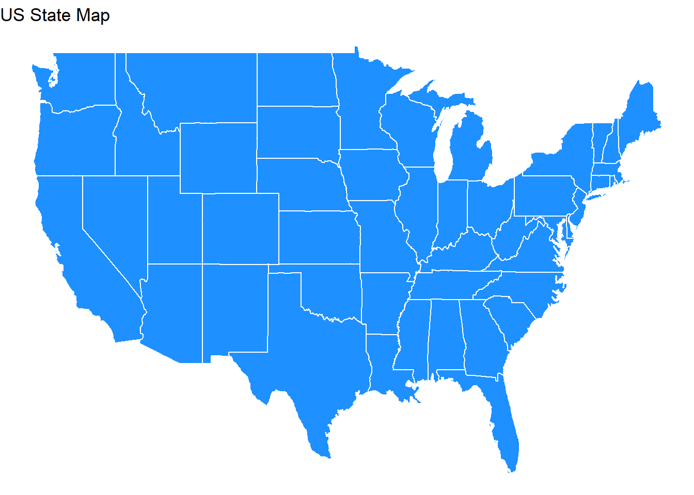
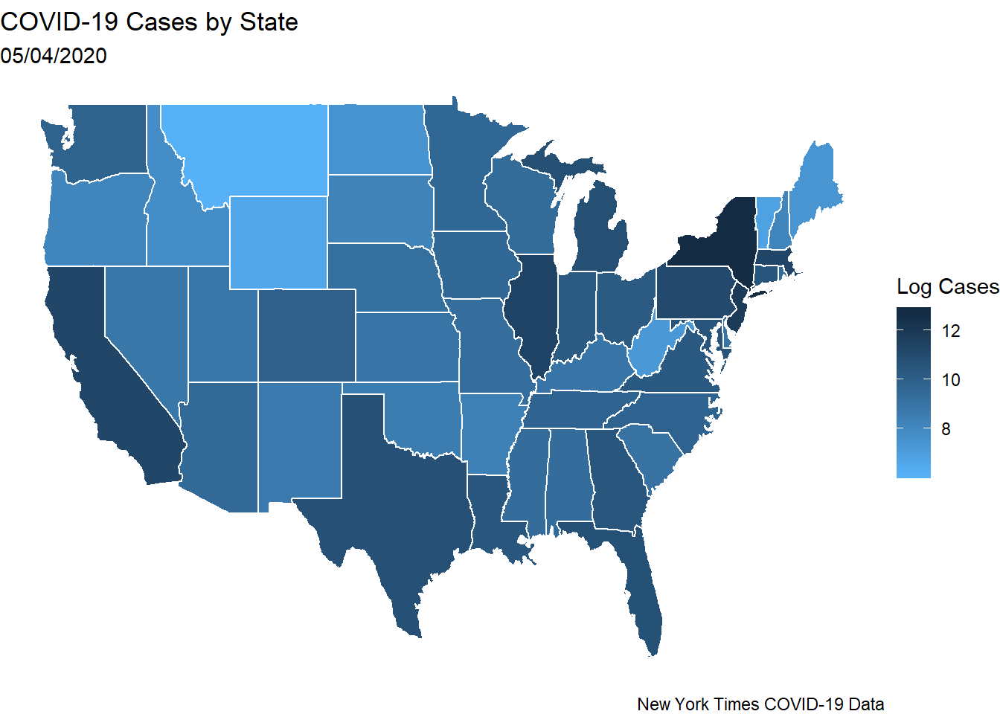
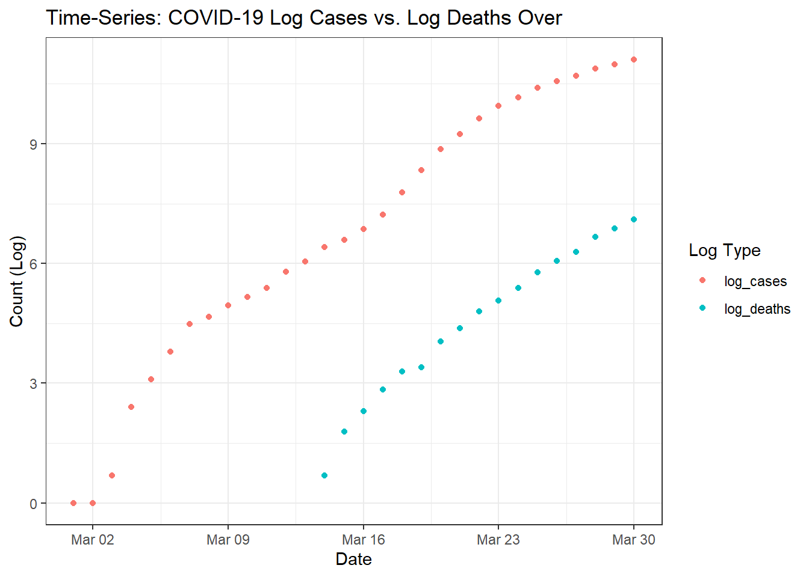
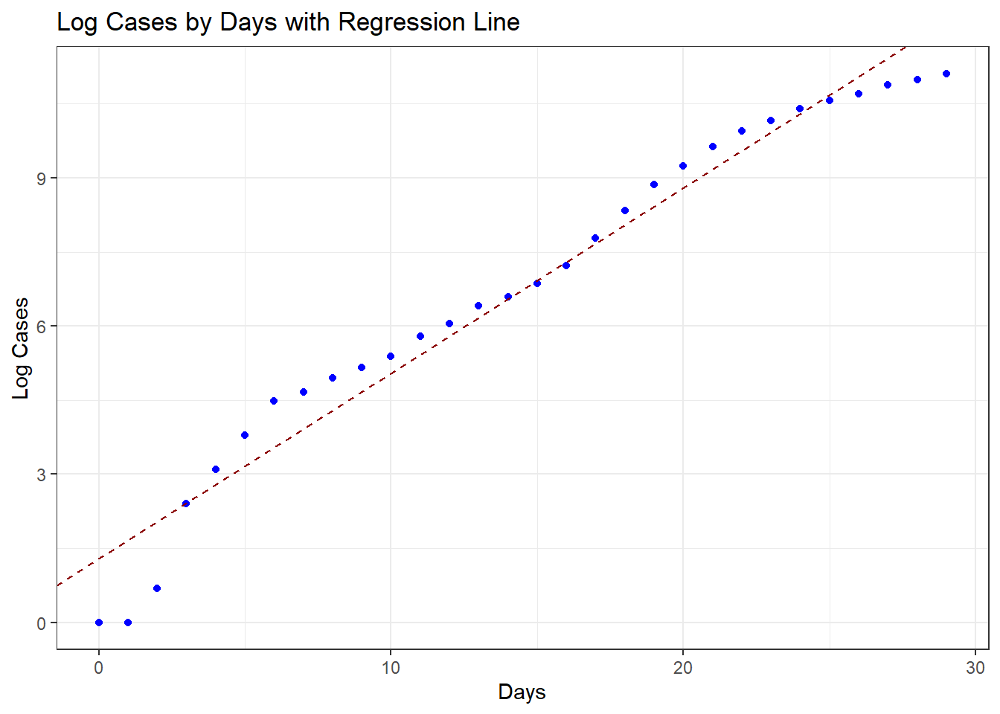
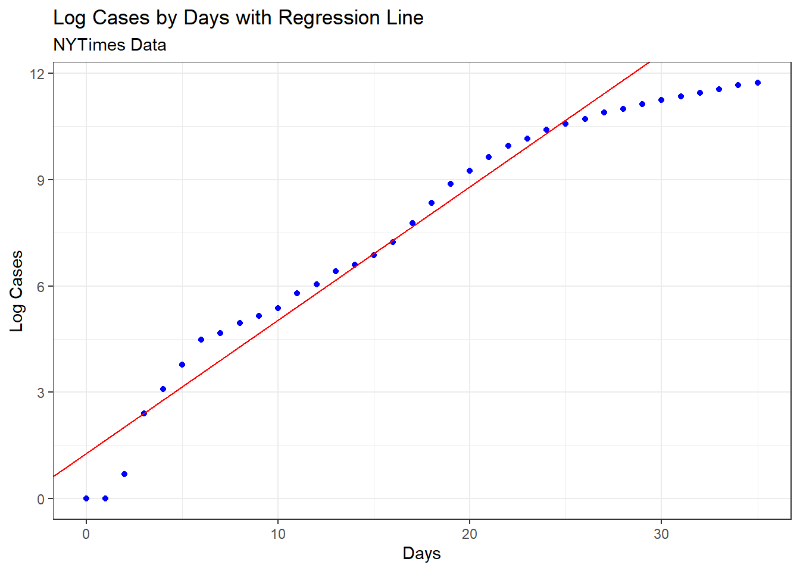

state_maps <- map_data("state")
ggplot(data = state_maps) +
geom_polygon(aes(x = long, y = lat, group = group),
color = "white", fill = "dodgerblue") +
theme_void()+
labs(title="US State Map")
First I will read in the New York Times COVID-19 State raw case data which can be found here
I then filter the data to only include the most recent day. I organize it to be arranged by descending day.
I use the datatable and head functions to display a clean table.
covid_state <- read_csv("https://raw.githubusercontent.com/nytimes/covid-19-data/master/us-states.csv")
covid_state_recent <- covid_state %>%
mutate(most_recent = max(date)) %>%
filter(date == most_recent) %>%
select(-most_recent) # descending date
datatable(head(covid_state_recent, 100))I will now join COVID-19 data to the state_map data frame. I use a left_join that keeps all states from the state_map data frame, even if they are not present in COVID-19 data.
Some cleaning with string manipulation must be done, as the states are lowercase in the state_map data
covid_state_recent <- covid_state_recent %>%
mutate(state = str_to_lower(state))
state_map_covid <- state_maps %>%
left_join(covid_state_recent, by = c("region" = "state"))log(cases) to visualize the variation between states, as it is difficult to see using just casesscale_fill_gradient argument to recolor the map so that higher log-cases appear in darker blues and lower log-cases appear in lighter bluesggplot(data = state_map_covid) +
geom_polygon(aes(x = long, y = lat,
group = group,
fill = log(cases)),color = "white") +
theme_void() +
scale_fill_gradient(low = "#56B1F7", high = "#132B43")+
labs(title = "COVID-19 Cases by State",
fill = "Log Cases",
subtitle = "05/04/2020",
caption = "New York Times COVID-19 Data")
The New York Times has also made publicly available daily COVID-19 confirmed cases and confirmed deaths on their github page: https://github.com/nytimes/covid-19-data
mutate for log_cases and log_deaths transforming using the log functionpivot_longer function as shown below-Inf or negative infintity. Using if_else I set values of this column to NA_real_ if the number is infinite.log_ny <- us_states %>%
filter(state=="New York")%>%
mutate(log_cases=log(cases),
log_deaths=log(deaths)) %>%
pivot_longer(cols=6:7,
names_to = "type_log",
values_to = "number") %>%
mutate(number = if_else(is.infinite(number), NA_real_, number))
datatable(head(log_ny))ggplot(data=log_ny)+
geom_point(aes(x=date, y=number, color=type_log))+
labs(title="Time-Series: COVID-19 Log Cases vs. Log Deaths Over",
x="Date",
y="Count (Log)",
color="Log Type")+
theme_bw()
datatable(head(us_states, 50))days by subtracting as.Date("2020-03-01") from the date variablelog_cases as the outcome and days as your predictor.days as a continuous numeric, so each unit increase in days will represent 1 day since the first day in this New York State dataset (03/01/20)kable() functionwide_ny <- log_ny %>%
pivot_wider(
names_from = type_log,
values_from = number) %>%
mutate(days = date-as.Date("2020-03-01"))
days_logcases_model <- lm(log_cases ~ days, data=wide_ny)
summary(days_logcases_model)
tidy_dayslogcases <- tidy(days_logcases_model)kable(tidy_dayslogcases)| term | estimate | std.error | statistic | p.value |
|---|---|---|---|---|
| (Intercept) | 1.2873979 | 0.2365217 | 5.443044 | 8.3e-06 |
| days | 0.3759335 | 0.0140062 | 26.840431 | 0.0e+00 |
The overall R-squared is 0.9626. This means that 96.26% of the variance in log cases can be explained by the days variable.
library(lubridate)
predict_cases <- function(string) {
days <- as.numeric(difftime(string, "2020-03-01"), units="days")
log_cases <- 1.2873979 + 0.3759335*days
expected_cases <- exp(log_cases)
return(expected_cases)
}
predict_cases("2020-03-30") # 196706.8
predict_cases("2020-03-31") # 286474
predict_cases("2020-04-01") # 417206.4
predict_cases("2020-04-02") # 607598.7predict_cases("2020-03-30") # 196706.8 predicted cases
wide_ny %>%
filter(date=="2020-03-30") %>%
select(cases) # 67174 actual cases From our equation there are 196706.8 predicted cases whereas there were actually 67174 actual cases. Our model does not take into account other variables besides days. Variables such as social distancing and weather and more can have an impact on the actual cases for any given day.
log_cases by days using the dataset you used to model New York state log casesgeom_abline() statement that takes in the intercept estimate from our model and the parameter estimate for daysggplot(data=wide_ny)+
geom_point(aes(x=days, y=log_cases), color="blue")+
geom_abline(intercept=1.2873979, slope = 0.3759335,
linetype= "dashed", color="darkred")+
labs(title="Log Cases by Days with Regression Line",
x="Days",
y="Log Cases")+
theme_bw()
The data point for the actual log cases on 3/30/2020 appears to be lower than the regression line for our predicted. This explains why our predicted log cases is higher than our actual log cases.
We can use updated data to assess whether the model is a good fit
log_cases by days using the updated data and included the previous regresison line.log_nytimes <- nyt_us_states %>%
filter(state=="New York")%>%
mutate(log_cases=log(cases),
log_deaths=log(deaths),
days = date-as.Date("2020-03-01"),
log_deaths = if_else(is.infinite(log_deaths), NA_real_, log_deaths))
ggplot(data=log_nytimes)+
geom_point(aes(x=days, y=log_cases), color="blue")+
geom_abline(intercept=1.2873979, slope = 0.3759335, color="red")+
labs(title="Log Cases by Days with Regression Line",
subtitle="NYTimes Data",
x="Days",
y="Log Cases")+
theme_bw()
As shown above, the regression line ran with older data isn’t the best fit for the newer data. The newer data shows that log cases are decreasing, whereas the regression line using older data continues to reach upwards.